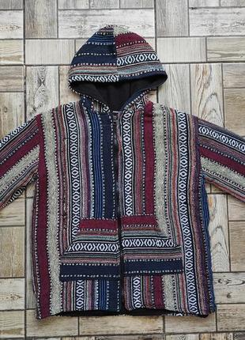

1. Do you walk barefoot outside of your house?
2. Do you take clothes that people put out on benches?
3. Can you put on clothes that you just found on a bench without washing them first?
4. Would you take something out of a trash bin?
5. Would you take food from the street?
6. Would you take food from someone who you don't know?
7. Would you wear colorful striped/ornamented clothes from ethnic shops?

8. Do you ever wear "harem pants" (sharovary)?
9. Can you dance when no one else is dancing?
10. Do you know what this is?